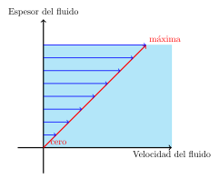
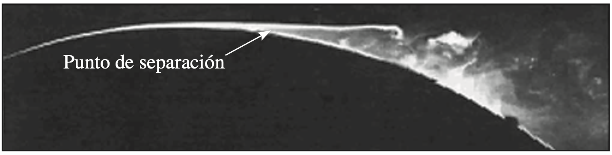

Una sustancia que se encuentra en la fase líquida o gaseosa se conoce como fluido.
Los fluidos en estado líquido (Líquidos) toman la forma del recipiente que los contiene, por lo tanto, tienen Volumen constante
Los fluidos en estado Gaseoso (Gases), se expanden hasta encontrar las paredes del recipiente, por lo tanto, tienen Volumen variable.
| Sólidos | Fluidos |
|---|---|
| Pueden oponer resistencia a un esfuerzo cortante por medio de la deformación | Se deforman de manera continua bajo la influencia del esfuerzo cortante |
| El esfuerzo es proporcional a la deformación | El esfuerzo no es proporcional a la deformación |
| Un Sólido se deforma hasta la falla | Un Fluido nuca deja de deformarse |
Tomado de Ref[2] Cap.1 Fig.1-3
Usualmente el flujo de un fluido se encuentra limitado por una superficie sólida Ej: El agua derramada sobre la mesa. Es válido preguntarse ¿Cómo afectan las superficies sólidas el flujo de un fluido?
Un fluido en contacto directo con un sólido "se pega" a la superficie debido a los efectos viscosos, por lo tanto no hay deslizamiento, esto se conoce como Condición de No Deslizamiento.

En la parte superior de su espesor, un fluido obtiene su velocidad máxima, en la parte inferior la Condición de No Deslizamiento hace que su velocidad sea cero.
Nota: La viscosidad del fluido es la responsable de que se presente esta condición.
Como consecuencia de la Condición de No Deslizamiento, el fluido ejerce una fuerza sobre la superficie en dirección del flujo, esta fuerza es conocida como: El arrastre de superficie.
Cuando se fuerza a un fluido a moverse sobre una superficie curva, la capa límite, no logra permanecer adherida a la superficie y en algún punto se separa, este fenomeno se conoce como separación del flujo

Tomado de Ref[2] Cap.1 Fig.1-11
Nota: La condición de No Desplazamiento se aplicada en todas partes a lo largo de la superficie, incluso, corriente abajo del punto de separación.Existe una amplia variedad de problemas del flujo de flidos en la práctica, es conveniente clasificarlos para poderl estudiarlos individualmente